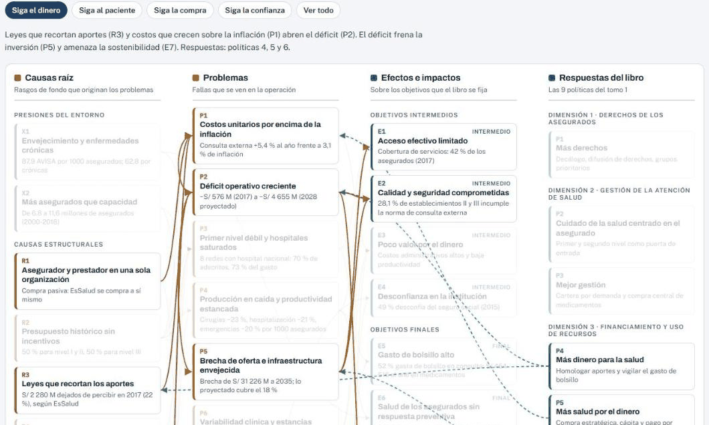

Gestión pública · Salud · Análisis de documentos
Mapa del Libro Blanco de EsSalud: de la causa a la respuesta

Pregunta
¿Cómo leer en minutos un estudio de 590 páginas sobre la reforma de EsSalud, y seguir cada recomendación hasta el problema que busca resolver y la página donde se dice?
Resultado
11 causas raíz, 9 problemas, 8 efectos y 9 políticas, unidos por 41 relaciones causales y 116 citas verificadas contra el PDF. Cuatro recomendaciones del estudio del Banco Mundial, entre ellas un subsidio público a los regímenes especiales y los copagos, no llegaron a la hoja de ruta 2019-2022.
Qué hice
Una página web que convierte los dos tomos del Libro Blanco de EsSalud en un mapa de trazabilidad. El tomo 1 propone 9 políticas y una hoja de ruta 2019-2022; el tomo 2 reúne los estudios que EsSalud encargó al Banco Mundial. La página trata a EsSalud como un subsistema del sistema de salud peruano: buena parte de lo que fija sus ingresos y sus reglas se decide fuera de él.
- Un diagrama con 12 relaciones entre EsSalud y el Congreso, el MTPE, Fonafe, el Minsa, Susalud, la Sunat, otros seguros, los prestadores externos y los asegurados.
- Un mapa en cuatro columnas: causas raíz, problemas, efectos y políticas. Al pulsar un elemento se ilumina su cadena completa y se abren sus citas; cada cita abre el PDF oficial de EsSalud en la página exacta.
- Cuatro recorridos para explicar el libro en una reunión, cada uno con su propio enlace: el dinero, el paciente, la compra y la confianza.
- Seis bucles de realimentación que explican por qué el problema persiste; por ejemplo, el hospital se lleva el presupuesto y el presupuesto histórico repite ese reparto cada año.
- Las 9 políticas con sus hitos, seis decisiones que el libro deja abiertas y una tabla con lo que el tomo 2 recomienda y el tomo 1 no recoge.
Cómo se hizo
Extraje el texto de los dos PDF con pdftotext. Leí completo el tomo 1 y, del tomo 2, los resúmenes, diagnósticos, conclusiones y recomendaciones de sus ocho estudios. Clasifiqué cada hallazgo como causa, problema, efecto o respuesta siguiendo la teoría del cambio del propio libro: políticas, objetivos intermedios (acceso, calidad, eficiencia, transparencia) y objetivos finales (salud, satisfacción y protección financiera). Un script en Python comprueba que cada una de las 116 citas literales esté en la página indicada. La página es un solo archivo HTML, sin librerías, hecho con Claude Code.
Limitaciones
- La clasificación en causas, problemas y efectos es mía; el libro no la hace. Las relaciones que infiero de sus datos están marcadas con ◇.
- Los bucles de realimentación son una interpretación: el libro no los dibuja, aunque cada eslabón tiene su cita.
- Del tomo 2 no leí a fondo el detalle técnico: el cálculo de brechas por red, cada grupo de diagnóstico y el manual de procesos.
- Los datos son de 2014 a 2018, los años de los estudios; el mapa no los actualiza.
- El libro tiene derechos reservados de EsSalud. La página cita fragmentos breves y enlaza a los PDF que publica EsSalud; no los reproduce.
Fuentes
EsSalud (2019). Hacia la modernización de la seguridad social en el Perú. Libro blanco para el diálogo. Tomo 1: Políticas y hoja de ruta para el fortalecimiento del Seguro Social de Salud, EsSalud 2019-2022. Tomo 2: Compendio de estudios, elaborados por el Banco Mundial. También en el repositorio institucional de EsSalud.